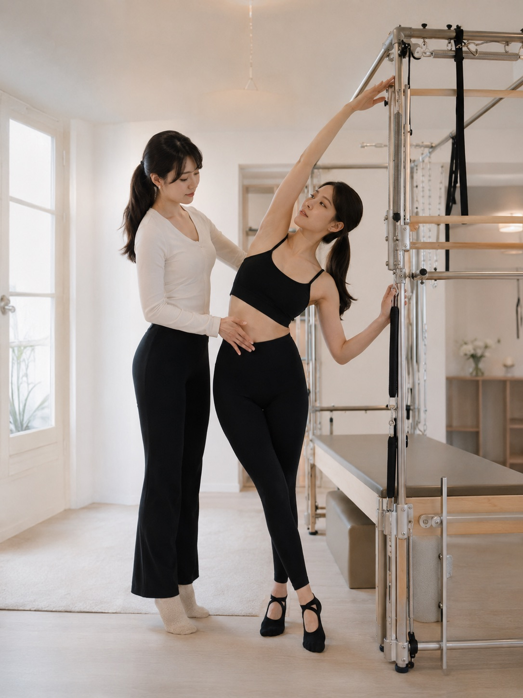

4つの架空ブランド。すべて「誰に・なぜ・どう売るか」から設計した、4つの型。
「美味しい時に思わず出る言葉」をそのまま名前にした、パリの韓国食料品店×レストラン。レトロポップな2店舗ブランド。
ファッション誌の表紙のように組んだ、パリのプライベートピラティス。ディドネ体×ローズ×手書きのメモ。

和紙×ガラモン×朱印。フランス人にseitaiを「教育」しながら信頼を作る、静かなキャビネットの型。
15席、単一コース、墨色の静けさ。余白と活字だけで高級を立ち上げるガストロノミーの型。
デザインは、戦略の最後の一手。誰に、なぜ、どう売るかを決めてから、型を選んでいます。
why → who → positioning → 4P → copy → design → build